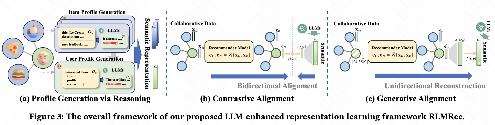
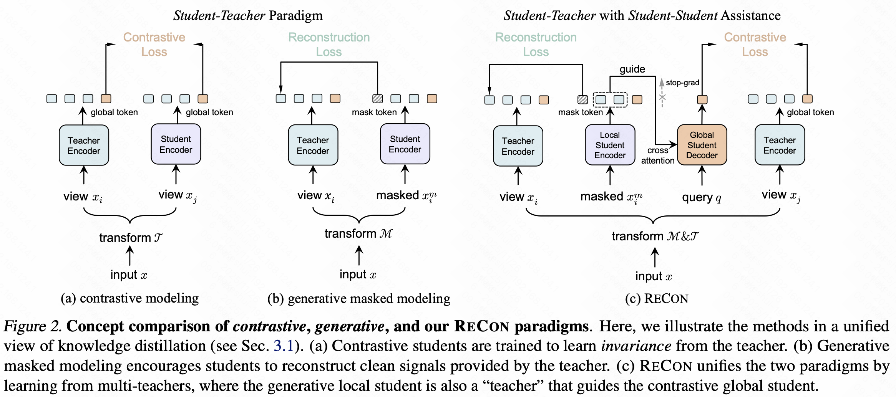

LLM —— LLM4Ad&Rec
广告推荐系统为什么要结合LLM？收益来源是什么？
首先我们来对比下广告推荐模型和LLM模型：
- 传统广告推荐模型的本质是模式匹配和关联挖掘。是以id类特征主导的判别式模型，sparse参数规模通常是百亿，要求毫秒级响应。它们在海量用户行为数据中学习“如果一个用户有A、B行为，那么他很可能点击C类广告”这样的统计规律。上限受限于数据中的共现关系，难以理解“为什么”会产生这种关联，对于新品、长尾物品或复杂的用户意图的泛化能力有限。
- LLM模型的本质是知识理解与逻辑推理。是dense参数规模可达千亿的生成式模型，低并发的秒级响应。LLM具备强大的自然语言理解、生成能力和zero-shot泛化能力。通过推理和内容理解，将用户在自然域（看视频、读新闻）的行为与广告域（商品）进行语义层面的对齐，能创造性地挖掘出用户潜在但未明确表达的需求，实现更精准的跨域推荐。借助LLM的世界知识进行语义表征，可以有效解决冷启和长尾问题。
总结说，广告推荐系统结合LLM，是借助LLM的世界知识和推理能力，增强广告推荐系统的内容理解和用户意图识别能力，从“匹配已知”到“生成未知”。
广告推荐中LLM的应用范式
LLM4Ad&Rec的应用主要有以下两种范式：
- LLM as Rec：生成式，摒弃原广告推荐模型，LLM作为主模型直接做预估或生成，落地代表工作是OneRec。
- LLM improve Rec：后训练方式，LLM作为辅助模块提取增益信息，引入下游广告推荐模型中。
第一种范式大家可以看我上一篇文章👉LLM生成式在推荐广告领域的落地。第二种是工业界落地的常见做法，具体说有3种LLM提供信息增益的方式：
- 特征入模：利用LLM外部知识和逻辑推理能力，用cot或sft对齐下游任务，为每个user/Item生成一组高质量的、富含语义的特征，然后将其作为静态或准静态特征注入现有推荐模型中。表征上可以输出embedding、语义id或结构化标签。embedding是直接使用LLM最后一层的隐层输出作为语义表征向量。语义ID是通过量化将连续的embedding离散化为id序列，更易于现有的id类模型吸收。结构化标签是通过prompt工程，让LLM输出分类标签、关键词、兴趣点等。特征入模是落地中应用最广泛的范式。
- 语义编码：特征入模的一种高级形式，侧重于重建物品与用户的语义标识系统，丰富user/item侧的语义表征。传统的PhotoId只承载协同信号，而语义id承载内容语义。将其作为新的token引入模型，相当于为模型装备了一本“内容词典”。比如将广告文本描述的embedding作为量化的输入，将量化id作为token引入sft过程。
- reward工具：帮助打分（对生成的推荐列表进行多样性、相关性、内容质量等方面的评估）、生成（直接生成推荐理由、广告创意，用于提升用户体验）、排序（通过LLM对少量Top候选进行更精细的语义重排）。
那么特征入模具体是怎么做的？
prompt输入尽可能是全域行为，包括user/item基础信息、user自然域行为（行为序列）、广告域行为（商品类目、转化）、搜索电商域行为（搜索query、加购）。任务上可以用LLM做细粒度描述、推理兴趣点、偏好内容总结。比如给定<user,item>的文本内容，预估user下一个转化的item，预估item下一个转化的user，该user是否会转化该item。也可以转化为语义id的形式输入并推理。这里有个其他团队的结论是推理生成粒度是更细的product name比item粒度效果更好。模型选型上qwen-instruct对中文推理效果更好。后训练的形式通常为多任务sft+渐进式对齐。落地上除了特征入模，还可以将LLM输出的表征做相似度匹配来增加召回。
因为id-embedding信息有限，id类模型的边际收益也逐渐递减。我们从语义id的形式看，特征入模如何更好的适配下游广告推荐任务？这里涉及到语义id的构建和对齐。
语义id的构建关键在于内容理解，要基于物料测多模态包括广告文本、图像（经CLIP/ViT编码）、音频等输入到一个多模态LLM（如Qwen-VL, GPT-4V）进行表征学习，Prompt引导的语义摘要是让MLLM生成一个浓缩的、结构化的语义摘要。如：“你是一个广告推荐专家。请从以下广告信息中，提炼出核心产品名称、主要功能、目标用户场景、关键属性（如品牌、颜色、尺寸）和情感基调。以JSON格式输出。”将得到的语义摘要文本，再用一个轻量级的文本encoder如BERT或直接使用LLM本身，转换为embedding。随后使用残差量化等技术，将其量化为一个离散的id序列，即语义id。关于量化大家可以看我之前的文章👉Tokenize: LLM/VLLM词元化技术介绍。
语义id特征入模的适配是一个语义和协同的对齐问题，目标是最大化来自LLM的语义表征和来自CF模型的协同表征之间的互信息。这意味着，在向量空间中，语义相似的物品，其协同表征也应相似；反之亦然。语义id的对齐中，通常是广告CF模型（多为user-item双塔、LTR模型）获得user/item协同表征embedding，对LLM获得的多模态内容表征进行量化时同时做U2I对齐和I2I对齐。
对齐方式有以下3种：
对比式对齐：通过拉近正样本对（同一物品的语义表征和协同表征），推远负样本对（不同物品的表征），实现两个空间的粗粒度对齐。首先用多层mlp将语义embedding降维到和cf embedding同一个维度，然后基于cosine相似度计算一个函数值约束。优点是简单直接，但可能无法捕捉复杂的非线性关系。
生成式对齐：将协同表征视为一种“语言”，让模型学习如何从协同信号“生成”或“重构”出语义信号。首先随机mask cf数据节点中的初始特征为[MASK] token，然后用多层mlp将该节点的cf embedding升维至语义embedding一个维度，用上述基于cosine相似度函数约束。生成式对齐要求模型学习更深层的映射关系，通常能学到更鲁棒的对齐特征。
ReCon等融合范式：统一了对比和生成式两种自监督范式，采用多教师蒸馏框架。对比式教师和生成式教师分别提供不同的监督信号，学生模型是使用一个统一的cf双塔模型同时向两位教师学习，目标是使自己输出的协同表征，既能通过对比学习区分正负，又能通过生成任务重构语义。

实践中不建议一开始就用全量数据做复杂的ReCon对齐。稳健的落地方案是渐进式对齐：
- 冷启动：直接使用LLM生成的语义id作为特征，注入ranking model，观察收益。
- 对比学习：构建一个简单的双塔结构，用对比损失进行微调，让cf embedding与LLM的语义表征初步对齐。
- 引入复杂范式：在基础收益稳定的前提下，引入ReCon等多任务学习，追求效果的进一步提升。
完成上序步骤后，最后就是特征融合了。将生成的语义id作为side feature，与原始的photoId、统计特征等一同输入到ranking model中，让模型自动学习如何权衡协同信号和语义信号。
追本溯源，“知识”（体现为深度内容与用户理解）与“推理”（体现为精准的推荐策略）共同构成了推荐系统的内核。LLM正持续模糊着传统推荐系统与通用智能体之间的边界。尽管在效率与成本上仍面临挑战，但通过特征工程、Agent化应用等渐进路径，LLM4Rec的时代崛起或许只是时间问题。
参考
- RLPF: Reinforcement Learning from Prediction Feedback for User Summarization with LLMs
- Learnable Item Tokenization for Generative Recommendation
- Representation Learning with Large Language Models for Recommendation
- Contrast with Reconstruct: Contrastive 3D Representation Learning Guided by Generative Pretraining